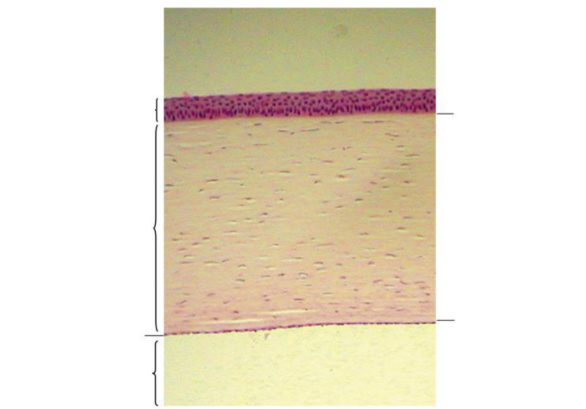
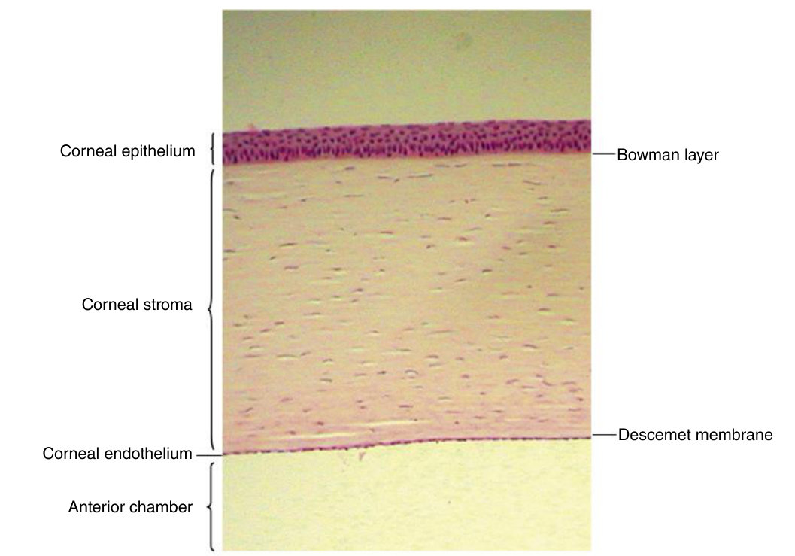

Five layers, and why they stay clear
The guidelines ask for the clinical significance of each corneal layer — so learn every layer through the thing that goes wrong with it.
Go down the five layers front to back and give, for each, one structural fact and one clinical consequence. Then explain in two sentences why the cornea is transparent and the sclera is not.
Describe the average central corneal thickness · the clinical significance of the five corneal layers · the layers and structures involved with a recurrent corneal erosion · where the cornea obtains oxygen and nutrients · the functions of the sclera, episclera, Tenon capsule and conjunctiva.
Your review note gives the first answer already: "535–555 im Zentrum". The periphery is thicker, 640–670 µm.
Exam guidelines · p. 1 · Your notes
1. The five layers, each through its clinical story
| Layer | Structure | What goes wrong |
|---|---|---|
| 1 · Epithelium | 5–7 cells, ~50 µm; surface cells joined by zonula occludens; basal cells held by hemidesmosomes | Break the tight junctions and fluorescein passes through: the defect glows green under cobalt blue |
| 2 · Bowman layer | 8–19 µm, acellular, randomly interwoven fibrils; made before birth | Does not regenerate — replaced by epithelium or scar |
| 3 · Stroma | 450–500 µm, ~90% of the thickness; uniform fibrils (25–35 nm) in 200–300 parallel lamellae | Lose the order and the cornea opacifies: oedema or scar |
| 4 · Descemet membrane | basement membrane of the endothelium; made all life, ~5 µm in children → ~15 µm, doubled by 40 | Very resistant and can regenerate; if torn it curls into the anterior chamber. Its end at the limbus = Schwalbe line |
| 5 · Endothelium | one layer, 5 µm, 70–80% hexagonal; ionic pumps move water out of the stroma | Cells do not divide: neighbours spread, density falls, and below ~400–500 cells/mm² the stroma swells |
TB 3 · p. 30–39, 44 · Handout 3 · p. 1–3

Name the five layers and the space behind them — six lines in all — then open the answer.
Answer: Fig. 3.3 with labels

Left, top down: corneal epithelium · corneal stroma · corneal endothelium · anterior chamber. Right: Bowman layer (under the epithelium) · Descemet membrane (above the endothelium).
The scattered dark nuclei in the pale band are keratocytes, the cells that maintain the lamellae.
2. Why it is clear — and how it stops being clear
1 · the very regular arrangement of the fibrils · 2 · their uniform diameter, 25–35 nm · 3 · the restricted distance between them. Together these cancel the scattered light by destructive interference. Fewer than 1% of photons are scattered.
Oedema changes the refractive index and pushes the fibrils apart, so the interference no longer cancels. Scarring rebuilds them wide and disordered. Active keratocytes during healing give a temporary haze.
Stromal swelling goes backward, because the anterior stroma is stiffer and Bowman layer is fixed — so Descemet membrane folds into striae. Endothelial failure causes far more oedema than a damaged epithelium.
TB 3 · p. 34, 37, 45 · Handout 3 · p. 2
The sclera is built from the same collagen and is opaque for exactly the mirror-image reasons: fibril diameters vary widely (25–230 nm), the bundles interlace irregularly, and it holds a quarter of the cornea's glycosaminoglycans, so less water (68%). Same material, different order, opposite result.
TB 4 · p. 53–54
3. Recurrent corneal erosion — name the chain
The objective asks for the layers and structures involved: that chain is the answer. What fails is the hemidesmosomes or the anchoring fibrils, so the epithelium sloughs again and again. Causes: an abrasion that never healed completely, or an epithelial basement membrane dystrophy. With age the basement membrane doubles in thickness by 60 — once it is thicker than the anchoring fibrils are long, the epithelium can let go. It is very painful, because the dense epithelial nerve endings tear.
TB 3 · p. 31 · Handout 3 · p. 2
4. Oxygen and nutrients — opposite sources
The cornea is avascular — part of why it is clear — so everything arrives by diffusion. Oxygen comes mainly from the atmosphere, dissolved in the tears; with the eye closed about two thirds comes from capillaries instead. Nutrients come mainly from the aqueous. The limbal vessels contribute a little of both.
The cornea switches to anaerobic glycolysis, lactate builds up, draws water into the stroma, and it swells. Longer term, new vessels sprout from the perilimbal capillaries: corneal neovascularization. In a contact lens wearer that means the lens fits poorly, moves poorly, or has low oxygen permeability. Remove the cause and the vessels empty but stay as ghost vessels, fine white lines.
TB 3 · p. 43, 45 · Slides 3 · #7
5. The wrappings, from outside in
| Tissue | Function the guidelines ask for |
|---|---|
| Sclera | keeps the globe's shape, resists internal and external force, anchors the extraocular muscles. No capillary beds of its own |
| Episclera | blood supply to the sclera and the peripheral cornea, from the anterior ciliary arteries |
| Tenon capsule | protects and supports the globe; the potential space inside it is the cavity the globe rotates in |
| Conjunctiva | lets lids and globe slide smoothly over each other; its goblet cells make the mucin layer |
Two scleral landmarks that return later: the scleral spur, a ring of circular collagen that gives origin to the ciliary muscle and anchors the trabecular sheets (chapter 6), and the lamina cribrosa, the sieve the optic nerve passes through — the weakest part of the outer coat, so raised pressure cups it in glaucoma.
TB 4 · p. 53–57 · Handout 3 · p. 5–6
Central cornea 535–555 µm, periphery 640–670 · epithelium ~50 µm, Bowman 8–19, stroma 450–500, Descemet 5 → 15, endothelium 5 · endothelial density 3000–4000 → 1000–2000 at 80, fails below ~400–500 · ~7000 nociceptors/mm² · minor abrasion heals in 24–48 h · limbus 1.5–2 mm wide · sclera 1 mm at the posterior pole, 0.3 mm behind the rectus insertions.
6. Drill
More: Mixed quiz — Chapter 3 · pictures only: Image quiz — Chapter 3.
Read study script § chapter 3, section 1 (the layer table, last column) and section 2, then Handout 3 pages 1–3. The four green clinical-correlate boxes in the handout are the four stories the objective wants.
Ask your teacher — "why does endothelial loss swell the cornea but epithelial loss does not?", "walk me through fluorescein staining again", "quiz me on the five layers until I can do them backwards".